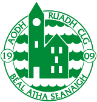

We are a GAA Club in Ballyshannon in County Donegal. Historically we, Aodh Ruadh are one of Donegals most successful GAA clubs, they have won 12 Donegal Senior Football Championships, they currently compete in Division 1 of the league and the Senior Championship. Our club colours are green and white and we play. our home games in Father Tierney Park.Aodh Ruadh was founded in 1909 as a football and hurling club. Father Tiernay Park openend officially in 1954. Jim "Natch" Gallagher was ther mentor of Donegal;s 1072 and 1974 Ulster Senior Football Championship winning teams. With Bundoran, Aodh Ruadh formed one half of the St Joseph's team that won seven County Championships and an Ulster Club Championship—the only Donegal team to achieve this feat until Gaoth Dobhair in 2018. They also contributed three players to Donegal's 1992 All-Ireland SFC title win: Brian Murray, Gary Walsh and Sylvester Maguire. In 2011, we made history by electing an all-female executive consisting of: Betty McIntyre, Chair, Emma Gaughan, Secretary, and Catherine McKee, Treasurer.
